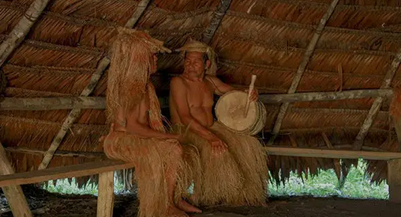
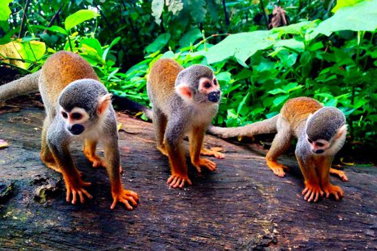
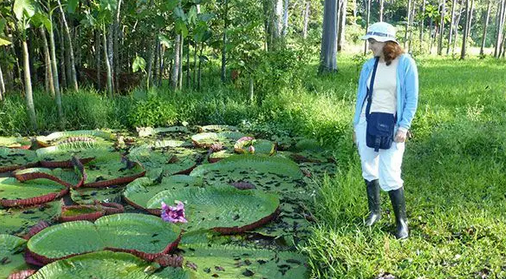
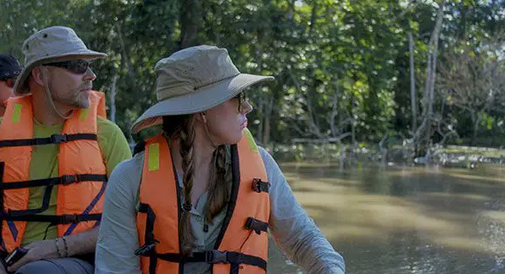
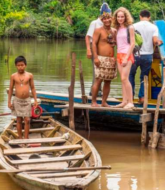

Inca Route: Start
Our TourPeruTravellers Itinerary :
1.- Iquitos – Cumaceba Amazon Lodge.
2.- Cumaceba Amazon Lodge – MONKEY ISLAND (Jul-Nov) 1hr walk.
3.- Cumaceba Amazon Lodge – PAICHES.
In TourPeruTravellers, we offer you this magnificent inka route where u enjoy mountains, archaeological sites
IGUANA PROGRAM 5D 4N
Our TourPeruTravellers Itinerary :
1.- Iquitos – Cumaceba Amazon Lodge.
2.- Cumaceba Amazon Lodge – MONKEY ISLAND (Jul-Nov) 1hr walk.
3.- Cumaceba Amazon Lodge – PAICHES.
 Reception at the airport of the city of Iquitos. Pedestrian City Tour. Depending on
the time of arrival. Transfer to our private jetty to board our fast boat. Visit to
the floating houses from November to July. Navigation through the Amazon
River, observing its different hamlets. Typical drink upon arrival at Cumaceba
Amazon Lodge. Assignment of private cabins. Brief tour around the lodge
knowing orchids. Typical self-service lunch; walk through the jungle knowing
flora and fauna. Sunset over the Amazon River. Night walk- insects, frogs,
tarantulas etc. Dinner. Amazon myths. Night at Cumaceba Amazon Lodge.
Reception at the airport of the city of Iquitos. Pedestrian City Tour. Depending on
the time of arrival. Transfer to our private jetty to board our fast boat. Visit to
the floating houses from November to July. Navigation through the Amazon
River, observing its different hamlets. Typical drink upon arrival at Cumaceba
Amazon Lodge. Assignment of private cabins. Brief tour around the lodge
knowing orchids. Typical self-service lunch; walk through the jungle knowing
flora and fauna. Sunset over the Amazon River. Night walk- insects, frogs,
tarantulas etc. Dinner. Amazon myths. Night at Cumaceba Amazon Lodge.
 Morning excursion and bird watching walking or in the lagoon, knowing the legendary Shansho - Hoatzin. Breakfast; visit the Yagua native group to learn about their typical clothing, dialect, way of life, demonstration of the ancient way of hunting, with the "Blowgun", they make handicrafts that can be exchanged or bought. Typical self-service lunch; tour of the Amazon river visiting a riverside family who preserve some varieties of animals such as: sloths, monkeys, turtles, "Anacondas" or boa constrictors. Search for gray and pink river dolphins. Night excursion in canoe, typical sounds of the humid tropical forest. Dinner. Night at Cumaceba Amazon Lodge.
 Breakfast. Tour of the Amazon River and visit to the private project for the preservation of monkeys, where 5 varieties will be known, some of them endangered. Walk through the jungle knowing some plantations of the riverside. Canoe tour through a tributary, special to photograph. Return. Amazonian Tales and Myths. Night at Cumaceba Amazon Lodge.
 Breakfast and observation of the largest Aquatic Lilac in the world, the Victoria Regia. Recreational fishing excursion species such as: catfish, sardines and the voracious "Piranhas". Typical self-service lunch. Visit to a riverside farm where the largest freshwater fish, the "PAICHE" Arapaima Gigas, is preserved. Walk through the small town knowing its daily work. Return to Cumaceba Amazon Lodge. Dinner and overnight.
 Breakfast and observation of the largest Aquatic Lilac in the world, the Victoria Regia. Recreational fishing excursion species such as: catfish, sardines and the voracious "Piranhas". Typical self-service lunch. Visit to a riverside farm where the largest freshwater fish, the "PAICHE" Arapaima Gigas, is preserved. Walk through the small town knowing its daily work. Return to Cumaceba Amazon Lodge. Dinner and overnight.
 Morning walk. Breakfast. Basic indications for survival in the jungle. Rowing canoeing depending on the season visiting a farmhouse. Timely return to Cumaceba Amazon Lodge, Lunch time. And return to the city of Iquitos. Transfer to the hotel or airport.
RECOMMENDATIONS AND CONDITIONS TO VISIT THE JUNGLE:
➢ Bring light colored clothing, a windbreaker jacket, a hat, glasses, a water bottle, mountain shoes, a flashlight, repellent, sunscreen, antihistamine and anti- inflammatory pills for the effects of mosquito bites and for your stay in the city bring clothes according to your taste. The use of boots and a plastic poncho for the rains is necessary during your stay in the jungle. Consult cost in the same Lodge.
➢ Indicate to your travel agent any restriction in your diet and/or any ailment in your health, to prevent and avoid inconveniences on excursions through the jungle.
➢ Children travel under the full responsibility of their parents. It is recommended from 3 years onwards.
➢ VACCINES, it is not mandatory, all our excursions take place in NON-ENDEMIC areas free of epidemics such as malaria, dengue and yellow fever. At the passenger's request, you can get vaccinated 10 days before your trip to the jungle. Consult with your Physician.
➢ Luggage in custody, leave it in our office for the days that you will be in the jungle, in the same way it is recommended not to carry more than $ 180 or $ 200 soles for consumption expenses in the bar and purchase of handicrafts. If you have valuables, declare them to the staff in charge. WITHOUT COST
➢ The company is not responsible for the loss of objects and accessories that are under its responsibility and that have not been declared or taken into custody, it is recommended to carry all these personal objects in a personal bag (kangaroo, backpack), as well as documents and money. If there is an incident, immediately notify the Lodge administrator, in the second instance at the Cumaceba Iquitos offices for the immediate solution, otherwise there will be no place to claim after the service is completed.
➢ The Cumaceba Group provides electricity from 6:00 p.m. to 10:00 p.m. to supply electrical charge to the batteries of electronic equipment, such as cameras, cell phones, video cameras, etc.
➢ FOR THE EXCURSIONS: Take into account and respect the indications of the Guide for the fulfillment of the program. The order of the excursions may vary due to weather factors. Average temperature in IQUITOS 28° - 35°.
➢ Bring swimwear and accessories for the use of the pool (Cumaceba Curaka Inn – Cumaceba Botanical Garden) and passengers who have a tour to Quistococha.
➢ Totally FORBIDDEN, carry firearms, knives and other weapons that put your stay and other passengers at risk.
➢ For people with a good heart and a charitable soul who want to share with the children and adults of the native communities, they can bring summer clothes, toys or food to donate. This is not required.
➢ HOTELS IN IQUITOS, if they take it directly to coordinate well their respective transfers and contracted services, it is not the responsibility of Cumaceba, the breach of any hotel service. It is recommended to take all the services with us city and jungle to have greater control of the service.
➢ IMPORTANT: MANDATORY use of life jackets while navigating the river and/or canoeing. Grupo Cumaceba is not responsible for lost, delayed or canceled flights, a charge applies for extra city-jungle transportation or accommodation in the city on behalf of the passenger. No refund or night in hotelciudad applies if the pax returns from the jungle before their scheduled date
➢ SCHEDULE: City – Jungle every day at 09:00 hrs. Return Jungle – City after lunch, arriving in Iquitos at 3:30 p.m. approx.